How to use Winnipeg Transit
Easy Transportation = Smartphone
How to install
You need 2 smartphone apps:
- Google maps => Finding which bus to take
- Winnipeg Bus Live => Live Bus Timings
-
https://play.google.com/store/apps/details?id=com.google.android.apps.maps&hl=en
-
https://play.google.com/store/apps/details?id=com.soyo.winnipegbuslive&hl=en
For Android phones (Samsung, Huawei, Lg, every phone that is not an iPhone):
For Iphone :
Open the iPhone App Store
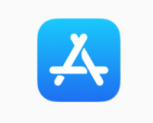Press on Searh
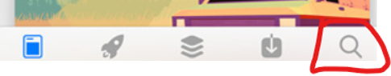Search for Google Maps
Press on the Google Maps logo
You will see the install button appear, press on it and it will get installed
How to use Google Maps
Let's say I want to go to the University of Winnipeg
1 - I open the Google Maps App on my phone
Then I press on 'Search Here'
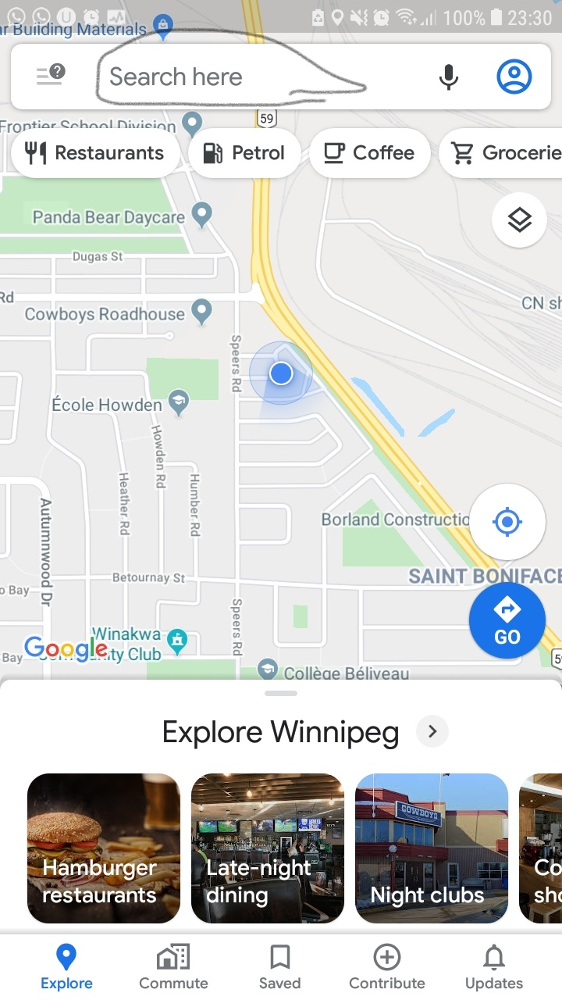Then I type 'U of W' - Spelling does not matter
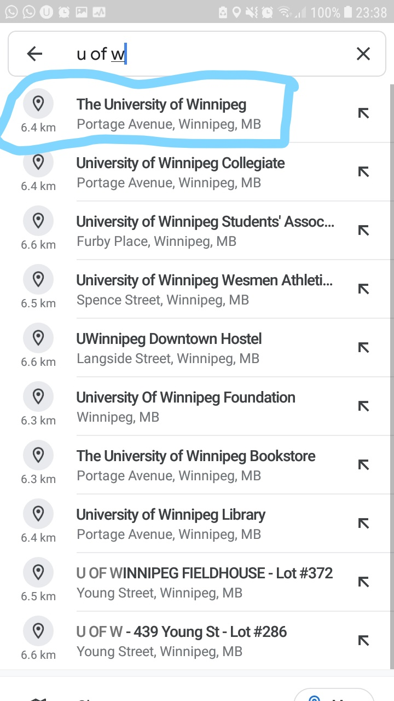I press on the first suggestion
Then I get this screen
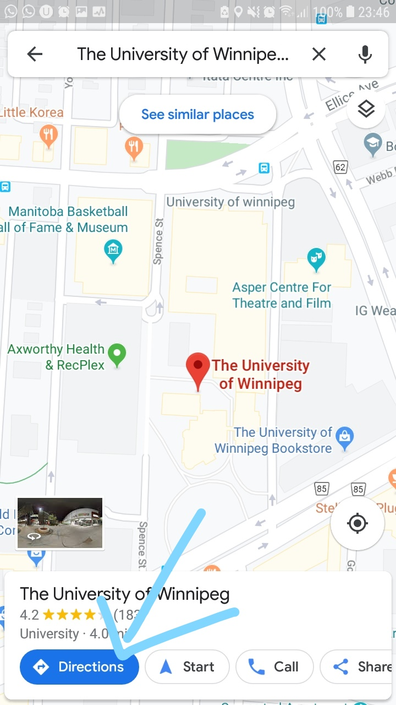I press on direction, Note: A location message may show up, just select ok
Then I get this
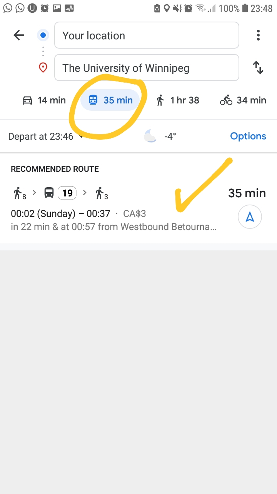after pressing in the Direction button, we get the following:
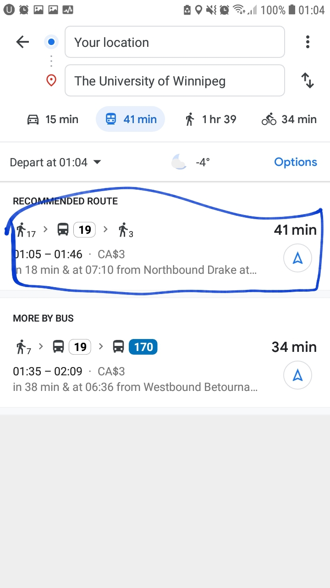Then we select the recommended bus route, then we get the following:
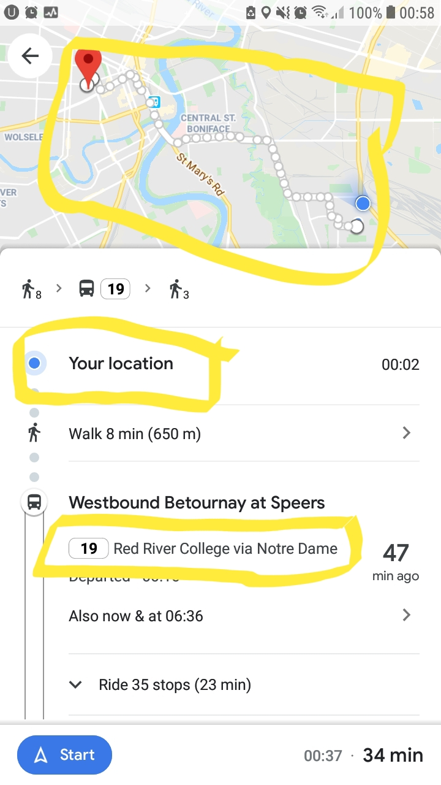Note the Bus Name.
The blue dot is your location, it gets updated live, so you know how far you are from your destination
Also, the following picture represents the next bus stop. So if you want to get off in any stop, you can pull the yellow string before you get to that stop
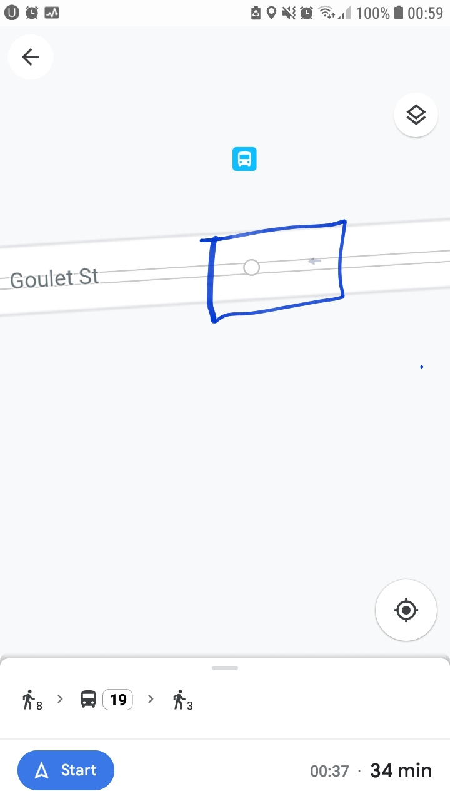Google Maps is a very powerful and useful tool, There is much more, but these are the basics that will let you navigate through winnipeg
How to use Winnipeg Bus Live
This is what the logo looks like

When you open it, here's what you get, note the numbers at the top left of each bus stop
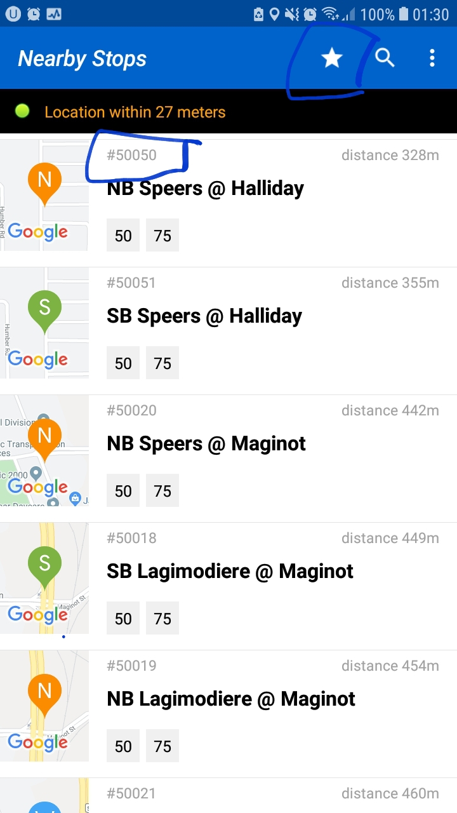this is what most bus stops look like


see the numbers 20249 & 10646?
those will appear in the app when you open it.
If they don't, you can search for them by pressing on the search button
Once you open a bus stop, here's what you get
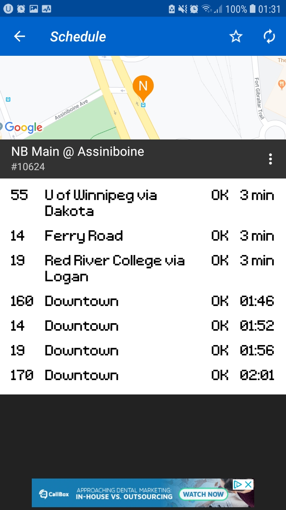it gives the bus times, you can also save the bus stop for easy access by pressing on the star
to access your bus stops, select the white star located on the page when opening the app
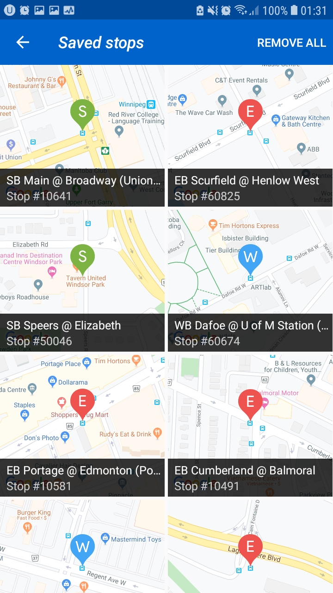Winnipeg Bus Live is also a very powerful and userful tool. There is also a lot more functionality I did not cover, but these instructions cover the basics